| Symbol |
Description |
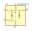
ADG901BCPZ | Description: SPST DC-4.5GHz absorbative switch, 40dB isolation at 1GHz, LFCSP-8
Keys: RF SPST switch CMOS LVTTL
Datasheet: https://www.analog.com/media/en/technical-documentation/data-sheets/ADG901_902.pdf |
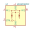
ADG901BRMZ | Description: SPST DC-4.5GHz absorbative switch, 40dB isolation at 1GHz, MSOP-8
Keys: RF SPST switch CMOS LVTTL
Datasheet: https://www.analog.com/media/en/technical-documentation/data-sheets/ADG901_902.pdf |
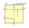
ADG902BRMZ | Description: SPST DC-4.5GHz reflective switch, 40dB isolation at 1GHz, MSOP-8
Keys: RF SPST switch CMOS LVTTL
Datasheet: https://www.analog.com/media/en/technical-documentation/data-sheets/ADG901_902.pdf |
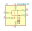
ADG918BCPZ | Description: SPDT DC-4GHz absorbative switch, 43dB isolation at 1GHz, LFCSP-8
Keys: RF Mux SPDT switch CMOS LVTTL
Datasheet: https://www.analog.com/media/en/technical-documentation/data-sheets/ADG918_919.pdf |
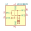
ADG918BRM | Description: SPDT DC-4GHz absorbative switch, 43dB isolation at 1GHz, MSOP-8
Keys: RF Mux SPDT switch CMOS LVTTL
Datasheet: https://www.analog.com/media/en/technical-documentation/data-sheets/ADG918_919.pdf |
ADG919BCPZ | Description: SPDT DC-4GHz reflective switch, 43dB isolation at 1GHz, LFCSP-8
Keys: RF Mux SPDT switch CMOS LVTTL
Datasheet: https://www.analog.com/media/en/technical-documentation/data-sheets/ADG918_919.pdf |
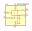
ADG919BRMZ | Description: SPDT DC-4GHz reflective switch, 43dB isolation at 1GHz, MSOP-8
Keys: RF Mux SPDT switch CMOS LVTTL
Datasheet: https://www.analog.com/media/en/technical-documentation/data-sheets/ADG918_919.pdf |
AS179-92LF | Description: 20 MHz to 4.0 GHz GaAs SPDT Switch, SC-70
Keys: rf spdt switch
Datasheet: http://www.skyworksinc.com/uploads/documents/AS179_92LF_200176H.pdf |
HMC7992 | Description: SP4T 100MHz-6GHz absorptive switch, 50 Ohm, LFCSP-16
Keys: rf switch sp4t absorptive
Datasheet: https://www.analog.com/media/en/technical-documentation/data-sheets/HMC7992.pdf |
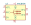
HMC849A | Description: High Isolation SPDT Non-Reflective Switch, DC-6GHz, Matched to 50 Ohm, LFCSP-16
Keys: RF SPDT switch
Datasheet: https://www.analog.com/media/en/technical-documentation/data-sheets/hmc849a.pdf |
KSW-2-46 | Description: SPDT DC-4.6GHz reflective switch, 50 Ohm, XX112
Keys: RF SPDT switch
Datasheet: https://www.minicircuits.com/pdfs/KSW-2-46+.pdf |
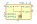
KSWA-2-46 | Description: SPDT DC-4.6GHz absorbative switch, 50 Ohm, XX112
Keys: RF SPDT switch
Datasheet: https://www.minicircuits.com/pdfs/KSWA-2-46+.pdf |
KSWHA-1-20 | Description: SPST DC-2.0GHz absorbative switch, 50 Ohm, XX112
Keys: RF SPST switch
Datasheet: https://www.minicircuits.com/pdfs/KSWHA-1-20+.pdf |
MASW-007221 | Description: Macom GaAs RF SPDT switch, DC-3GHz, 0.56/12dB loss/isolation, SOT-363
Keys: RF SWITCH SPDT
Datasheet: http://cdn.macom.com/datasheets/masw-007221.pdf |
MASWSS0115 | Description: Macom GaAs RF SPDT switch, DC-3GHz, 0.3/22dB loss/isolation, SOT-363
Keys: RF SWITCH SPDT
Datasheet: http://cdn.macom.com/datasheets/maswss0115.pdf |
MASWSS0136 | Description: Macom GaAs RF SPDT switch, DC-3GHz, 0.4/27dB loss/isolation, SOT-363
Keys: RF SWITCH SPDT
Datasheet: https://cdn.macom.com/datasheets/MASWSS0136.pdf |
MASWSS0143 | Description: Macom GaAs RF SPDT switch, DC-3GHz, 0.4/16dB loss/isolation, IP 58dB@1GHz, SOT-363
Keys: RF SWITCH SPDT
Datasheet: https://cdn.macom.com/datasheets/MASWSS0143.pdf |
MASWSS0151 | Description: Macom GaAs RF SPDT switch, DC-3GHz, 0.65/21dB loss/isolation, SOT-363
Keys: RF SWITCH SPDT
Datasheet: https://cdn.macom.com/datasheets/MASWSS0151.pdf |
MASWSS0166 | Description: Macom GaAs RF SPDT switch, DC-3GHz, 0.3/12dB loss/isolation, SOT-363
Keys: RF SWITCH SPDT
Datasheet: https://cdn.macom.com/datasheets/MASWSS0166.pdf |
MASWSS0176 | Description: Macom GaAs RF SPDT switch, DC-3GHz, 0.35/21dB loss/isolation, SOT-363
Keys: RF SWITCH SPDT
Datasheet: https://cdn.macom.com/datasheets/MASWSS0176.pdf |
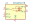
MASWSS0178 | Description: SPDT High Isolation Terminated Switch, 0.01-3.0 GHz, MSOP-8
Keys: RF switch SPDT
Datasheet: https://cdn.macom.com/datasheets/MASWSS0178.pdf |
MASWSS0179 | Description: Macom GaAs RF SPDT switch, DC-2GHz, 0.6/22dB loss/isolation, SOT-26 (SOT-23-6)
Keys: RF SWITCH SPDT
Datasheet: https://cdn.macom.com/datasheets/MASWSS0179.pdf |
MASWSS0192 | Description: Macom GaAs RF SPDT switch, DC-3GHz, 0.33/13.5dB loss/isolation, SOT-363
Keys: RF SWITCH SPDT
Datasheet: https://cdn.macom.com/datasheets/MASWSS0192.pdf |
MSW-2-20 | Description: SPDT DC-2.0GHz reflective switch, 50 Ohm, SOP-8
Keys: RF SPDT switch
Datasheet: https://www.minicircuits.com/pdfs/MSW-2-20+.pdf |
MSW2-50 | Description: SPDT DC-5.0GHz reflective switch, 50 Ohm, QFN-12
Keys: RF SPDT switch
Datasheet: https://www.minicircuits.com/pdfs/MSW2-50+.pdf |
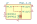
MSWA-2-20 | Description: SPDT DC-2.0GHz absorbative switch, 50 Ohm, SOP-8
Keys: RF SPDT switch
Datasheet: https://www.minicircuits.com/pdfs/MSWA-2-20+.pdf |
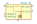
MSWA2-50 | Description: SPDT DC-5.0GHz absorbative switch, 50 Ohm, QFN-12
Keys: RF SPDT switch
Datasheet: https://www.minicircuits.com/pdfs/MSWA2-50+.pdf |
SKY13575-639LF | Description: SP4T 100MHz-6GHz absorptive switch, 50 Ohm, QFN-14
Keys: rf switch sp4t absorptive
Datasheet: https://www.skyworksinc.com/-/media/SkyWorks/Documents/Products/2201-2300/SKY13575_639LF_203270D.pdf |